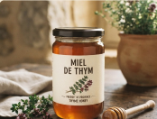
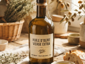
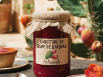
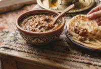
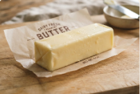
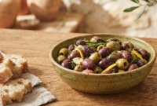

Miel de thym
Un miel ambré au goût puissant, récolté dans les collines du Rif.
180 DH · pot de 500 g
Les trois produits qui ont fait la réputation de Thimdrine sur les marchés de Nador.

Un miel ambré au goût puissant, récolté dans les collines du Rif.
180 DH · pot de 500 g

Première pression à froid, fruitée et légèrement poivrée.
90 DH · bouteille de 1 L

Douce et parfumée, préparée en petites quantités chaque été.
45 DH · pot de 350 g

Une pate onctueuse et gourmande, preparee a base de noix.
120 DH · pot de 250 g

Un beurre riche et savoreux, ideal a tartiner ou pour donner une touche.
45 DH · pot de 250 g

Des olives soigneusement selectionnees, au gout riche et naturel.
25 DH · pot de 250 g
Envoyez-nous votre demande de commande : nous vous répondons sous 48 heures pour organiser la livraison ou le retrait à Nador.
Faire une demande de commande